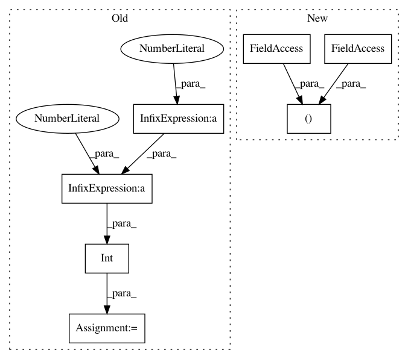

219b3f98001448eff5f2cbb5467940b6a2bfb4fe,data/aligned_dataset.py,AlignedDataset,__getitem__,#AlignedDataset#Any#,19
Before Change
AB_path = self.AB_paths[index]
AB = Image.open(AB_path).convert("RGB")
AB = AB.resize(
(self.opt.loadSize * 2, self.opt.loadSize), Image.BICUBIC)
AB = transforms.ToTensor()(AB)
w_total = AB.size(2)
w = int(w_total / 2)
h = AB.size(1)
if self.center_crop:
w_offset = int(round((w - self.opt.fineSize) / 2.0))
h_offset = int(round((h - self.opt.fineSize) / 2.0))
else:
w_offset = random.randint(0, max(0, w - self.opt.fineSize - 1))
h_offset = random.randint(0, max(0, h - self.opt.fineSize - 1))
After Change
w, h = AB.size
w2 = int(w / 2)
A = AB.crop((0, 0, w2, h)).resize((self.opt.loadSize, self.opt.loadSize), Image.BICUBIC)
B = AB.crop((w2, 0, w, h)).resize((self.opt.loadSize, self.opt.loadSize), Image.BICUBIC)
A = transforms.ToTensor()(A)
B = transforms.ToTensor()(B)
w_offset = random.randint(0, max(0, self.opt.loadSize - self.opt.fineSize - 1))
In pattern: SUPERPATTERN
Frequency: 3
Non-data size: 7
Instances
Project Name: junyanz/BicycleGAN
Commit Name: 219b3f98001448eff5f2cbb5467940b6a2bfb4fe
Time: 2018-09-03
Author: junyanzhu89@gmail.com
File Name: data/aligned_dataset.py
Class Name: AlignedDataset
Method Name: __getitem__
Project Name: deepfakes/faceswap
Commit Name: 5a79a6f5e9f859bbd80d5f403052df82e1c25f1c
Time: 2020-12-21
Author: 36920800+torzdf@users.noreply.github.com
File Name: lib/align/aligned_face.py
Class Name: AlignedFace
Method Name: _convert_centering
Project Name: pantsbuild/pants
Commit Name: 8fac40d5bb7b75da9ba26d7fa34e30c18b954e33
Time: 2019-10-08
Author: dwagnerhall@twitter.com
File Name: src/python/pants/goal/run_tracker.py
Class Name: RunTracker
Method Name: initialize